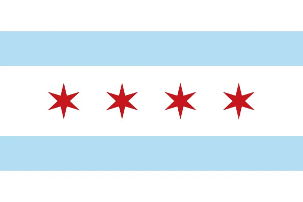
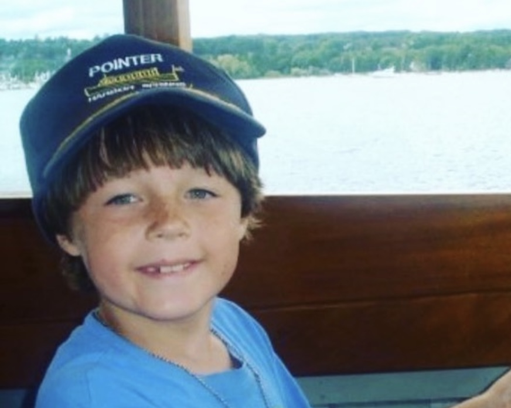
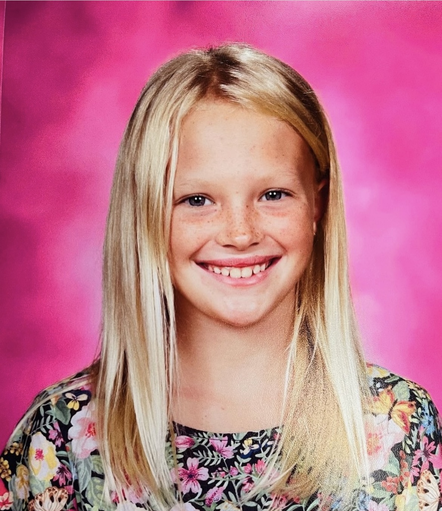
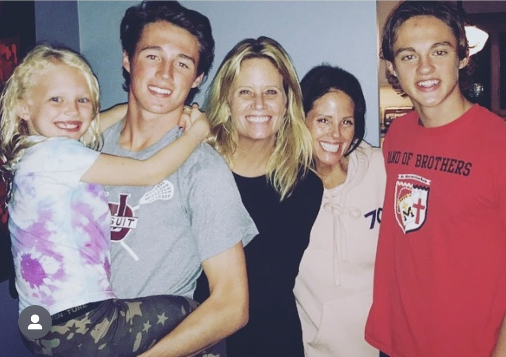
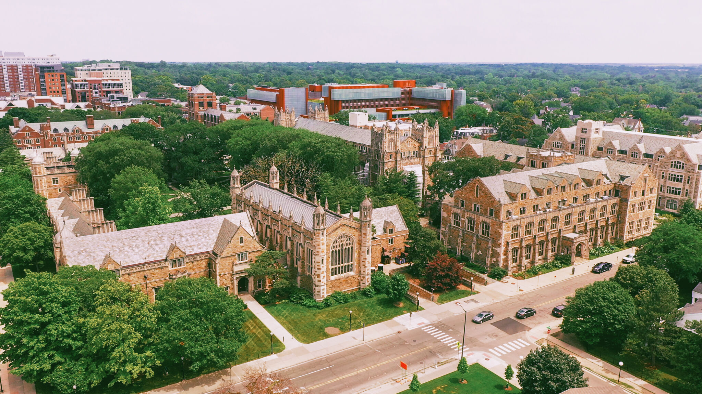

I was born on October 23rd, 2001 in Northwestern Hospital in Chicago Illinois. I was the first born to my parents Bryan and Kelly Shetterly. I lived in Chicago until the age of three where my parents decided to relocate the family.

When I was three years old, my parents decided to move to beverly Hills Michigan which is where my mom grew up. By this point I also have a baby brother that is a little over 1 year old who will be pictured later.

When I was 10 years old. My mom and dad had another kid expect this time it was a girl named Lauer! I am 10 years older than her while my brother is 9 and she also attends Holy Name catholic School making my family have one of the longest stints with at least one child attending Holy Name!

In the photo from left to right it is my little sister Lauer, me, my aunt Kim, my mom Kelly, and my brother Laughlin.

Throughout my search for which college I should attend, I fell in love with the University of Michigan making it my top choice of university. I applied early action and midway through December I was admitted. Joy flooded over me at the thought of being a Freshman on campus and I could not wait.